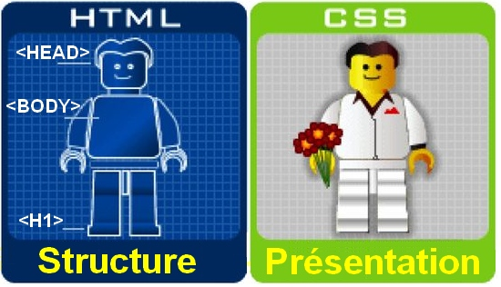

L'un des objectifs majeurs des CSS est de permettre la mise en forme hors des documents. Il est par exemple possible de ne décrire que la structure d'un document en HTML, et de décrire toute la présentation dans une feuille de style CSS séparée. Les styles sont appliqués au dernier moment, dans le navigateur web des visiteurs qui consultent le document. Cette séparation fournit un certain nombre de bénéfices, permettant d'améliorer l'accessibilité, de changer plus facilement de présentation, et de réduire la complexité de l'architecture d'un document.
Ainsi, les avantages des feuilles de style sont multiples :
- La structure du document et la présentation peuvent être gérées dans des fichiers séparés ;
- La conception d'un document se fait dans un premier temps sans se soucier de la présentation, ce qui permet d'être plus efficace ;
- Dans le cas d'un site web, la présentation est uniformisée : les documents (pages HTML) font référence aux mêmes feuilles de styles. Cette caractéristique permet de plus une remise en forme rapide de l'aspect visuel ;
- Un même document peut donner le choix entre plusieurs feuilles de style, par exemple une pour l'impression et une pour la lecture à l'écran. Certains navigateurs web permettent au visiteur de choisir un style parmi plusieurs ;
- Le code HTML est considérablement réduit en taille et en complexité, puisqu'il ne contient plus de balises ni d'attributs de présentation.
